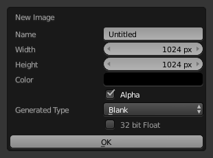

图像设置¶

图像面板。
- 图像
数据块菜单。
- 新建
+ - 打开 新建图像 菜单会弹出 生成 图像的对话框。
- 新建
源¶
见 支持的图像格式。
单张图像¶
静态图像或单帧。
影片¶
打包到容器的帧。
- Deinterlace
- TODO
- 视频场
- 设置每个渲染帧的场数量 (2场为1帧)。用于场和隔行扫描视频， 即每张图像包含奇偶场，或单场。
- 帧
- 帧
- 设置使用的帧范围。
- 起始
- 序列的全局起始帧，重放的起点。这是全局设置，意味着这会影响所有剪辑用户如影片剪辑编辑器、运动追踪限制和合成节点。
- 偏移量
- 对影片第一帧进行偏移。在转换场景帧数至视频文件帧数时添加额外的偏移。该选项不影响追踪数据或其他相关数据。
- 匹配影片长度
- 将图像用户数据块的长度设置为选中视频的长度。
- 自动刷新
- 在帧变化时自动刷新图像。
- 循环
- 播放至最后一帧时从头开始并重复，循环播放。
生成¶
Blender中生成的或预先载入的图像。

源为生成时的图像面板。 |

新建图像弹出菜单。 |
- 宽度、高度
- 图像尺寸，单位为像素。
- 颜色
- 设置新建空白图像的填充色。
- 32 位浮点数/ 浮点缓存
- 生成一张32位图像。
- 类型
- 单色图
- 生成指定颜色的空白图像。
- UV栅格图
- 生成一个棋盘格图案，每个方格包含一个彩色十字(+)。
- 彩色栅格图
- 生成一张更加复杂的栅格图，包含字母和数字指代位置。用于测试UV映射方式，降低拉伸和扭曲。
通用选项¶
- 文件
用于替换或打包文件。
- 打包
- 将资源文件嵌入到当前blend文件。
- 路径
- 关联文件的路径。
- 打开
- 打开 文件浏览器 ，从磁盘选择文件。
- 重新载入
- Reloads the file. Useful when a file has been rework in an external application.
- 色彩空间
色彩空间。
- XYZ
- XYZ空间。
- VD16
- 从gamma 2.2 sRGB空间转换而来的简单视频色彩空间。
- sRGB
- 标准RGB显示空间。
- Raw
- Raw空间。
- Non-Color
- 用于包含非色彩数据的图像的色彩空间 (如法线贴图)。
- Linear ACES
- ACES线性空间。
- 线性
- 线性709(全范围)。Blender原生线性空间。
- 预览为渲染结果
- 在屏幕上显示图像时，应用显示转换的渲染部分。
- 使用多视图
- 参考 多视图。
- 使用Alpha
决定是否使用图像的alpha通道。
- Alpha模式
-
直接, 预乘
- 视频场
与 场 图像一起使用。视频单帧由两张不同图像(场)合并组成。该选项确保在渲染场时， 图像的场正确地用在渲染的场中。 MIP映射 不能与 场 结合使用。视频场次序:
上场优先，下场优先。